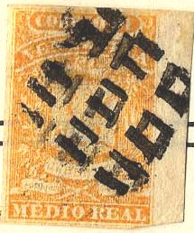
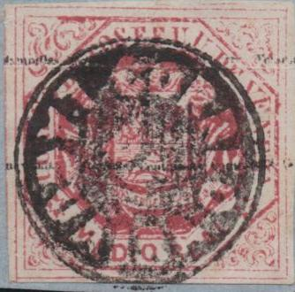

Return To Catalogue - Venezuela 1883-1920 - Venezuela forgeries of the 1859 issue - Venezuela forgeries of the 1861 issue - Venezuela forgeries of the 1863 issue - Venezuela forgeries of the 1865 issue - miscellaneous - 'Escuelas', 'Instruccion' and fiscal stamps
Note: on my website many of the
pictures can not be seen! They are of course present in the
catalogue;
contact me if you want to purchase it.
Country in South America, bordering Colombia to the west, British Guyana to the east and Brazil to the south with capital Caracas. Check out the excellent website on Venezuelian stamps, its locals and forgeries http://www.mystamps.net, made by Williams Castillo. I would like to thank him for setting some of the information available to me. Stamps with inscription "ESCUELAS" or "INSTRUCCION" were fiscal stamps, but they could be used for postage before July 1895.
1/2 (medio) r orange 1 r (un) blue 2 r (dos) red
For the specialist; these stamps were issued in a fine and a coarse impression.
Value of the stamps |
|||
vc = very common c = common * = not so common ** = uncommon |
*** = very uncommon R = rare RR = very rare RRR = extremely rare |
||
| Value | Unused | Used | Remarks |
| 1/2 r | R | R | |
| 1 r | R | R | |
| 2 r | R | R | |
For forgeries click here.


'0', '5' and '2 1/2' cancels


1/4 (cuarto) c green 1/2 (medio) c grey 1 c (un) brown
Value of the stamps |
|||
vc = very common c = common * = not so common ** = uncommon |
*** = very uncommon R = rare RR = very rare RRR = extremely rare |
||
| Value | Unused | Used | Remarks |
| 1/4 c | R | RR | |
| 1/2 c | R | RR | |
| 1 c | R | RR | |
For forgeries click here.

Red cancels (I'm not sure if these are genuine cancels)


1/2 c red 1 (un) c grey 1/2 (medio) r yellow 1 r (un) blue 2 r (dos) green
Value of the stamps |
|||
vc = very common c = common * = not so common ** = uncommon |
*** = very uncommon R = rare RR = very rare RRR = extremely rare |
||
| Value | Unused | Used | Remarks |
| 1/2 c | RR | RR | |
| 1 c | RR | RR | |
| 1/2 r | ** | *** | |
| 1 r | R | R | |
| 2 r | RR | RR | |
For forgeries click here.


1/2 c green 1 c green 1/2 r red 1 r red 2 r yellow
Overprinted in very small letters

1 c violet 2 c green 1/2 r red 1 r red 2 r yellow
For the specialist; the overprint is either repeatedly "Contrasena Estampillas de Correo", or "Contrasena Estampilla de Correos" or "Contrasena Estampillas de correo" (with small "c" in "correo").
Value of the stamps |
|||
vc = very common c = common * = not so common ** = uncommon |
*** = very uncommon R = rare RR = very rare RRR = extremely rare |
||
| Value | Unused | Used | Remarks |
| 1/2 c | RR | RRR | |
| 1 c | RR | RRR | |
| 1/2 r | *** | *** | |
| 1 r | RR | R | |
| 2 r | RR | RR | |
Overprinted with small letters |
|||
| 1 c | R | R | |
| 2 c | RR | RR | |
| 1/2 r | R | *** | |
| 1 r | RR | R | |
| 2 r | RR | RR | |
The 1/2 r without overprint exist in tete-beche (RR), example:

1/2 r tete-beche
For forgeries click here.
More information about these stamps can be found on http://www.mystamps.net/venezuela/identificacion/octagonos01.html (in Spanish).

5 c blue 10 c red 25 c yellow 50 c brown 1 B green
These stamps are perforated 11.
Value of the stamps |
|||
vc = very common c = common * = not so common ** = uncommon |
*** = very uncommon R = rare RR = very rare RRR = extremely rare |
||
| Value | Unused | Used | Remarks |
| 5 c | * | * | |
| 10 c | *** | *** | |
| 25 c | ** | ** | |
| 50 c | *** | *** | |
| 1 B | *** | *** | |
Forgeries:
(Probably forgeries)
(Note the strange cancels on these forgeries, reduced size)
Forgeries of these stamps are described in 'Focus on forgeries' by Varro E. Tyler, they seem to have been made in Venezuela. All genuine stamps are perforated 11 on all sides, stamps with any other perforation (11 1/2 or 12, or combations of 11, 11 1/2 and 12) are forgeries. Genuine stamps also have thin guidelines outside the stamps, these guidelines extend to the complete length or width of the stamp (according to Focus on forgeries). Some forgeries also have guidelines, but they are only visible in the corners of the stamps. On http://www.mystamps.net/venezuela/identificacion/bolivar01.html we can also find that there should be oblique shadelines on the nose of Simon Bolivar. In the forgeries these are absent, or only a few dots can be found. These 'reprints' also exist in tête-bêche.
Forgeries with tete-beche stamps.
For issues of Venezuela from 1883 to 1920 click here.
On the early issued, sometimes cancels with only a number can be found. I've been told that these are actually weight indications already existing in pre-philatelic times.


(A '0', '2 1/4', '3' and a '8' cancel)
I've also seen '2', '2 1/2', '3' and '7'.

Mute cancel


Mute star cancel of Ciudad Bolivar.
Franco cancel in an ellipse. I've seen a similar cancel in red
with "CARACAS" in the center.

Negative cancel of "CORREO LA GUAIRA"


"F.Va ADMON DE CORREOS LA GUAIRA" with date and
"CORREOS CARACAS" without date.
"CORREO DE VENEZUELA VALENCIA" on a Escualas stamp.
http://www.mystamps.net made by Williams Castillo.
Catalogo Especializado de Estampillas Venezuela by Aurelio Blanco, Caracas,
{kind=link}
{kind=link}
{kind=link}